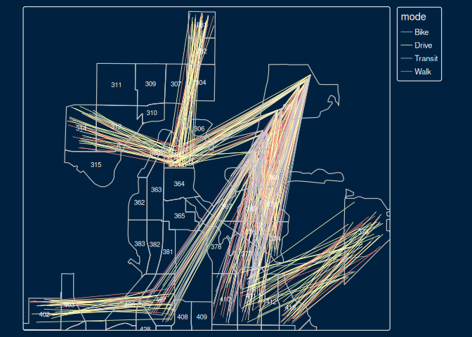

abstr provides an R interface to the A/B Street transport system simulation and network editing software. It provides functions for converting origin-destination data, combined with data on buildings representing origin and destination locations, into .json files that can be directly imported into the A/B Street city simulation.
See the formats page in the A/B Street documentation for details of the schema that the package outputs.
Installation
You can install the released version of abstr from CRAN with:
install.packages("abstr")Install the development version from GitHub as follows:
remotes::install_github("a-b-street/abstr")Usage
The example below shows how abstr can be used. The input datasets include sf objects representing buildings, origin-destination (OD) data represented as desire lines and administrative zones representing the areas within which trips in the desire lines start and end. With the exception of OD data, each of the input datasets is readily available for most cities. The input datasets are illustrated in the plots below, which show example data shipped in the package, taken from the Seattle, U.S.
library(abstr)
library(tmap) # for map making
tm_shape(montlake_zones) + tm_polygons(col = "grey") +
tm_shape(montlake_buildings) + tm_polygons(col = "blue") +
tm_style("classic")Example data that can be used as an input by functions in abstr to generate trip-level scenarios that can be imported by A/B Street.
The map above is a graphical representation of the Montlake residential neighborhood in central Seattle, Washington. Here, montlake_zones represents neighborhood residential zones declared by Seattle local government and montlake_buildings being the accumulation of buildings listed in OpenStreetMap
The final piece of the abstr puzzle is OD data.
head(montlake_od)
#> o_id d_id Drive Transit Bike Walk
#> 1 281 361 23 1 2 14
#> 2 282 361 37 4 0 11
#> 3 282 369 14 3 0 8
#> 4 301 361 27 4 3 15
#> 5 301 368 6 2 1 16
#> 6 301 369 14 2 0 13In this example, the first two columns correspond to the origin and destination zones in Montlake, with the subsequent columns representing the transport mode share between these zones.
Let’s combine each of the elements outlined above, the zone, building and OD data. We do this using the ab_scenario() function in the abstr package, which generates a data frame representing tavel between the montlake_buildings. While the OD data contains information on origin and destination zone, ab_scenario() ‘disaggregates’ the data and randomly selects building within each origin and destination zone to simulate travel at the individual level, as illustrated in the chunk below which uses only a sample of the montlake_od data, showing travel between three pairs of zones, to illustrate the process:
set.seed(42)
montlake_od_minimal = subset(montlake_od, o_id == "373" |o_id == "402" | o_id == "281" | o_id == "588" | o_id == "301" | o_id == "314")
output_sf = ab_scenario(
od = montlake_od_minimal,
zones = montlake_zones,
zones_d = NULL,
origin_buildings = montlake_buildings,
destination_buildings = montlake_buildings,
pop_var = 3,
time_fun = ab_time_normal,
output = "sf",
modes = c("Walk", "Bike", "Drive", "Transit")
)The output_sf object created above can be further transformed to match A/B Street’s schema and visualised in A/B Street, or visualised in R (using the tmap package in the code chunk below):
tm_shape(output_sf) + tmap::tm_lines(col = "mode", lwd = .8, lwd.legeld.col = "black") +
tm_shape(montlake_zones) + tmap::tm_borders(lwd = 1.2, col = "gray") +
tm_text("id", size = 0.6) +
tm_style("cobalt")
#> [tm_lines()] Argument `lwd.legeld.col` unknown.
Each line in the plot above represents a single trip, with the color representing each transport mode. Moreover, each trip is configured with an associated departure time, that can be represented in A/B Street.
The ab_save and ab_json functions conclude the abstr workflow by outputting a local JSON file, matching the A/B Street’s schema.
output_json = ab_json(output_sf, time_fun = ab_time_normal, scenario_name = "Montlake Example")
ab_save(output_json, f = "montlake.json")Let’s see what is in the file:
file.edit("montlake.json")The first trip schedule should look something like this, matching A/B Street’s schema.
Importing scenario files into A/B Street

After generating a ab_scenario.json, you can import and simulate it as follows.
- Install the latest build of A/B Street for your platform.
- Run the software, and choose “Sandbox” on the title screen.
- If necessary, change the map to the Montlake district of Seattle, or whichever map your JSON scenario covers.
- Change the scenario from the default “weekday” pattern. Choose “import JSON scenario,” then select your
ab_scenario.jsonfile.
After you successfully import this file once, it will be available in the list of scenarios, under the “Montlake Example” name, or whatever name specified by the JSON file.
You can generate scenarios for any city in the world. See here for how to import new cities into A/B Street.
Note: Instead of installing a pre-built version of A/B Street in the first step, feel free to build from source, but it’s not necessary for any integration with the abstr package.
Advanced: scripting imports
If you’re generating many JSON scenarios, you might not want to manually use A/B Street’s user interface to import each file. You can instead run a command to do the import. See the docs at a-b-street.github.io/docs/tech/dev/ for details, but the basic steps are:
- Install the latest build of A/B Street for your platform, or build from source.
- From the main A/B Street repo directory import the scenario
These steps can be achieved by running the following lines of code (run the commented lines of code to install Rust, clone the A/B Street repo and set the working directory, you can also replace ../montlake.json with a different path to the scenario file):
# curl --proto '=https' --tlsv1.2 -sSf https://sh.rustup.rs | sh # install rust
# git clone git@github.com:a-b-street/abstreet
# cd abstreet
# cargo run --bin updater -- download --minimal
cargo run --bin cli -- import-scenario --input ../montlake.json --map data/system/us/seattle/maps/montlake.bin
cargo run --bin game --releaseIf you’re using Windows, you’ll instead run cli.exe. If you’re building from source use the following command:
Next steps
For a more comprehensive guide in the art of collecting, transforming and saving data for A/B Street, check out the abstr documentation. The package website, hosted at a-b-street.github.io/abstr, contains articles that will help you get going with abstr. See the following articles for reproducible examples that will help you getting your valuable origin-destination and activity data into a dynamic transport simulation environment for visualisation, model exaperiments and more:
- The
abstrvignette for more detail on getting started with the package and context - The
activityvignette on representing multi-trip-per-person activity models in R and A/B Street - The
pct_to_abstrvignette on importing output from an established project, the Propensity to Cycle Tool, into A/B Street